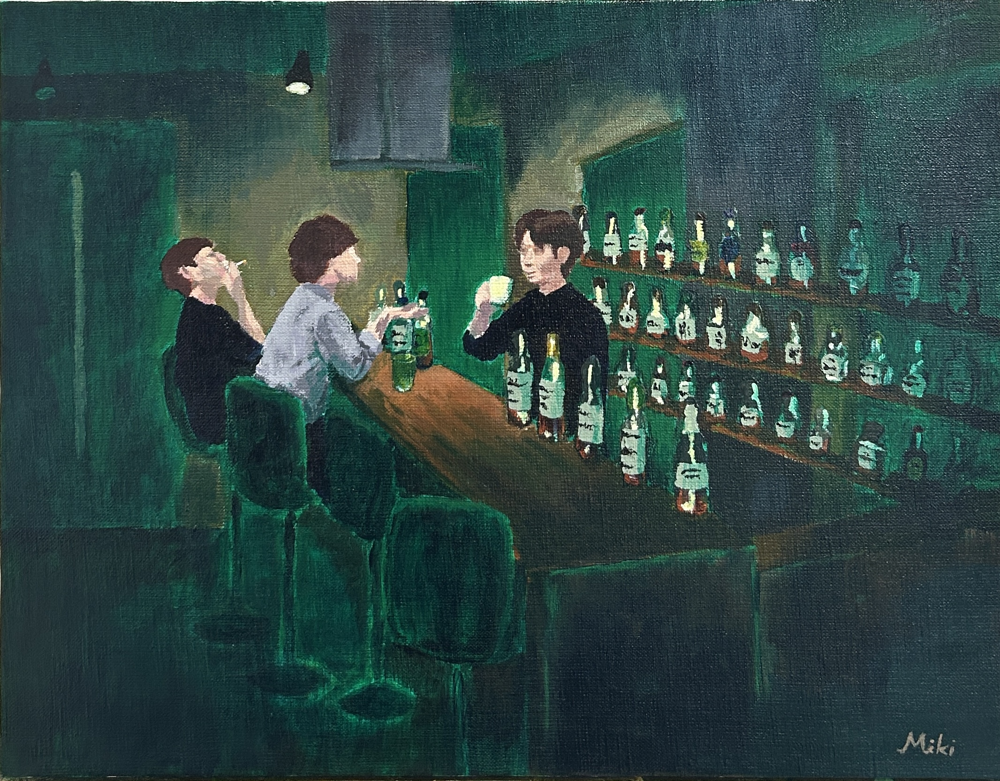
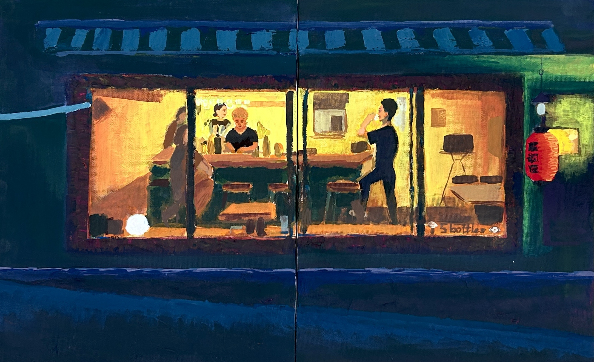
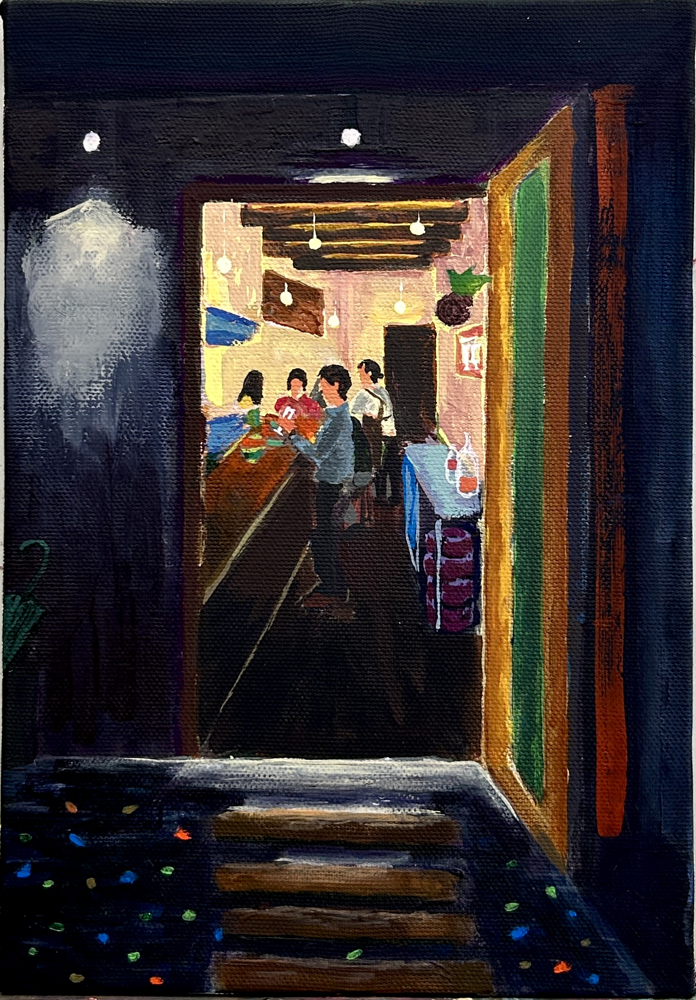
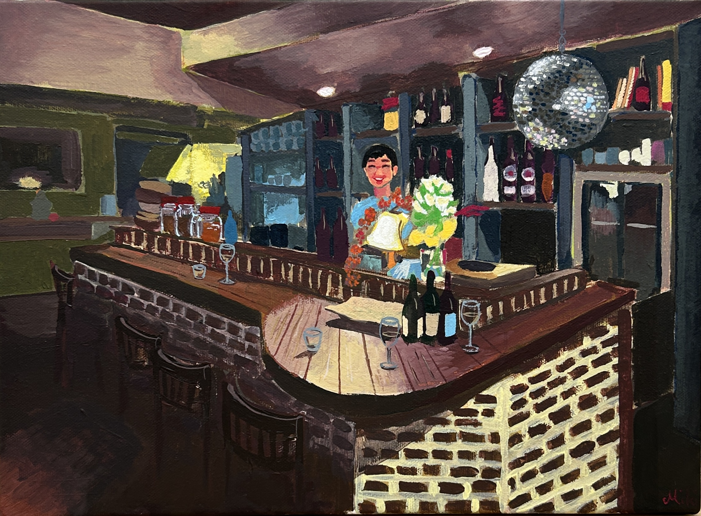
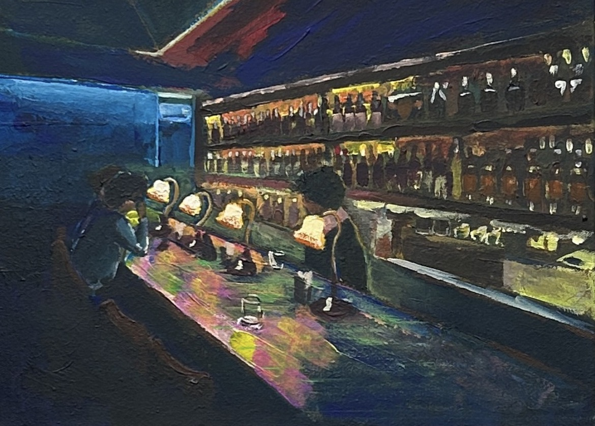
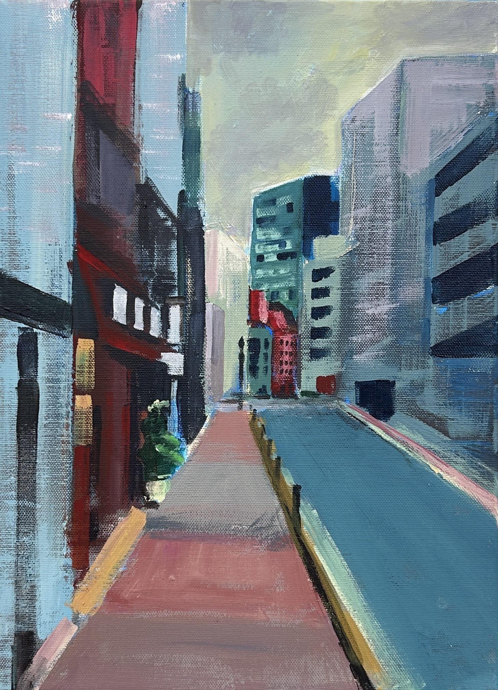
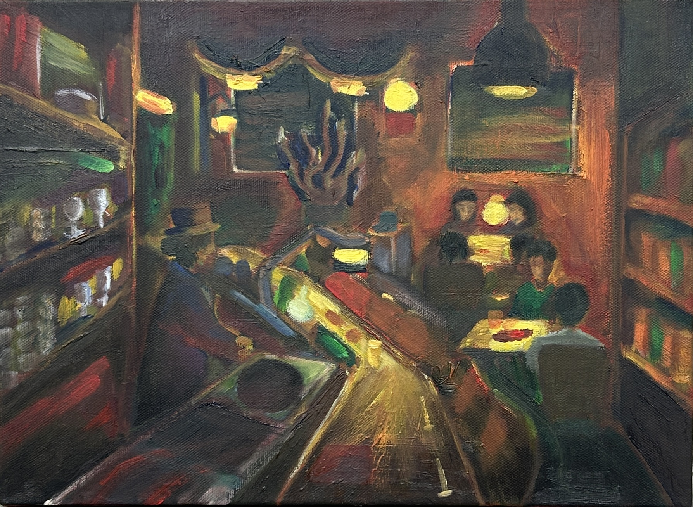
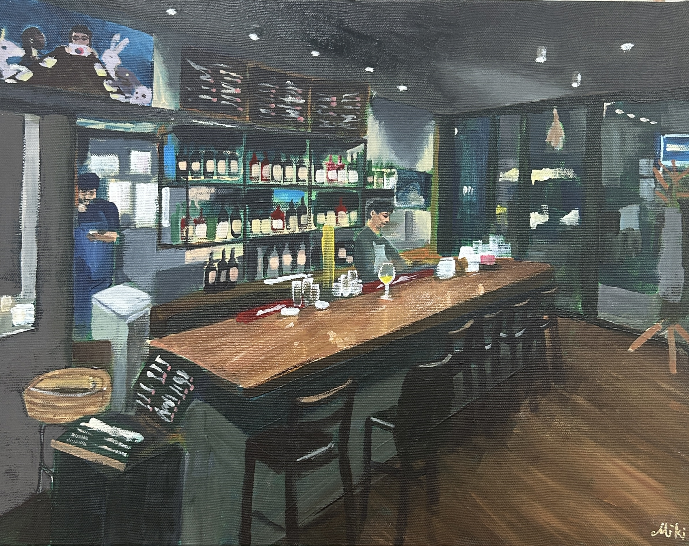
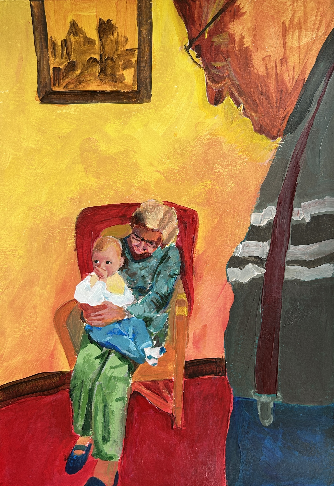

ファブリ美来
Raised in France. Nurtured by immersion in diverse artistic discipline, my delicate sensory perception
allows me to capture the invisible realms and bring a uniquely personal world to life on canvas.
At the core of my practice is the pursuit of ultimate, highly refined beauty—
expressing a quiet and profound dimension that exists beyond the visible surface.
フランス育ち。多様な芸術に触れて育まれた繊細な感性をもとに、目に見えない領域、
そして自分の中にだけ存在する世界をキャンバスへと描き出しています。
追求するのは、どこまでも研ぎ澄まされた極限の「美」。目に見える枠組みを超えた、
静かで深い世界を表現しています。








